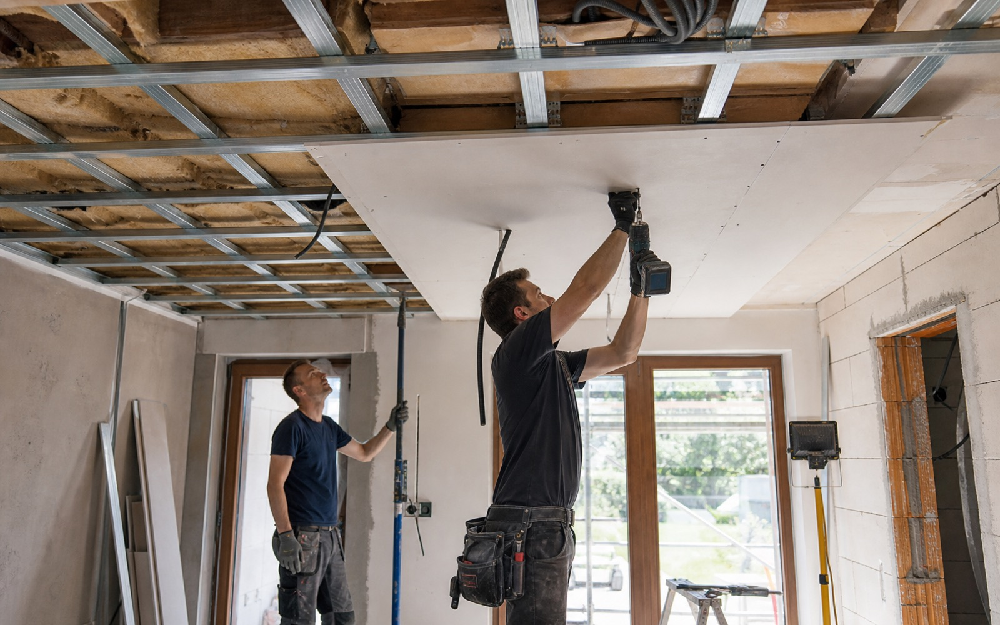
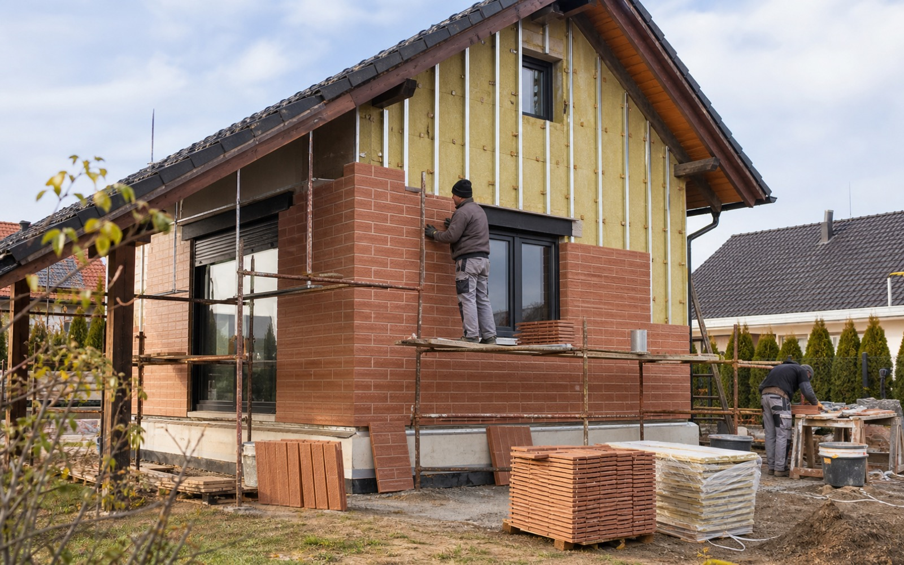
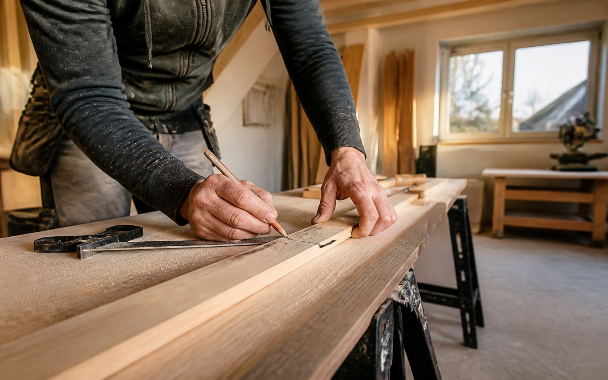

Zednické práce
Opravy, úpravy, vyzdívky a stavební práce kolem domu, bytu i menších objektů.
Zednické práce Polička • fasády • rekonstrukce
Zednické práce, odvětrávané fasády, sádrokartony a rekonstrukce v Poličce a okolí. Osobní domluva, řemeslná praxe a spolehlivá realizace.
Přístup
Petr Funk se zaměřuje na zednické práce, fasády, sádrokartony a rekonstrukce. Web prezentuje služby přehledně a profesionálně tak, aby zákazník rychle pochopil rozsah práce a mohl rovnou zavolat.

Služby
Opravy, úpravy, vyzdívky a stavební práce kolem domu, bytu i menších objektů.
Funkční obvodový plášť domu, fasádní obklady a práce s konstrukční skladbou.
Stavební úpravy koupelen, jader a navazujících interiérových částí.
Příčky, podhledy, zakrytí rozvodů a suchá výstavba pro interiéry.
Zlepšení tepelného komfortu domu a úspora nákladů na vytápění.
Menší i větší stavební úpravy podle stavu objektu a osobní domluvy.

Fasády
Odvětrávaná fasáda pomáhá chránit stavbu, zlepšuje vzhled domu a vytváří funkční skladbu obvodového pláště. V rámci stávající prezentace jsou přirozeně zahrnuté systémy Novabrik a Stavoblock.
Zkušenosti a důvěra
Lokální řemeslník nemusí působit malým dojmem. Jasná prezentace služeb, konkrétní kontakt a profesionální vizuál pomáhají zákazníkovi rychle pochopit, že má komu zavolat.
Postup
Nejrychlejší je telefon, pro fotky a delší popis e-mail.
Upřesní se typ zakázky, termín a základní představa.
U větších prací pomůže kontrola objektu přímo na místě.
Postup se přizpůsobí konstrukci, materiálu a stavu domu.
Práce probíhá podle domluvy a reálných podmínek stavby.
Lokalita
Adresa a hlavní lokalita: Polička, Horní Předměstí.
Zobrazit trasu
Kontakt
Děkujeme. Formulář je v demo režimu. Pro skutečnou poptávku prosím zavolejte nebo napište e-mail.